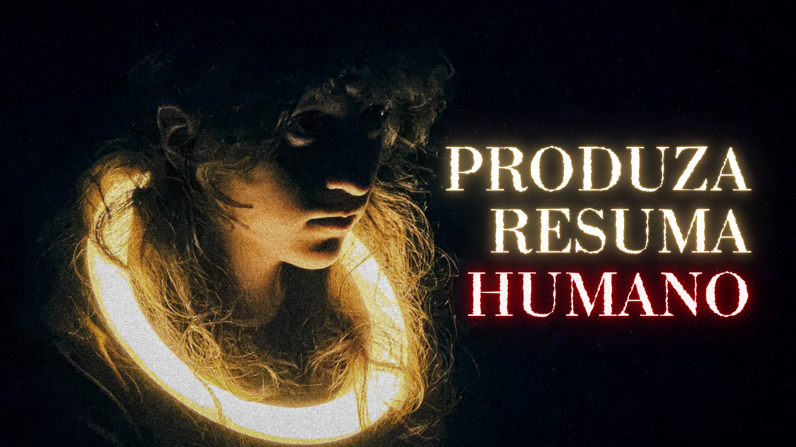

Um dos principais focos desenvolvidos pelo nosso grupo foi o documentário, reunindo entrevistas com artistas e uma história encenada pelos próprios alunos, caracterizando-se no gênero de docuficção.
Clique Aqui para acessar o canal na plataforma do YouTube.
Acompanhe o vídeo completo no Youtube clicando na capa.
